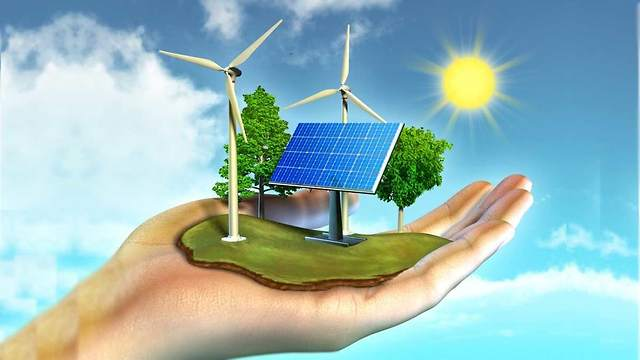

Introdução
O que é energia sustentável?
As energias sustentáveis são recursos naturais que são utilizados para gerar energia de uma forma mais limpa, assim não prejudicando o meio ambiente. Alguns exemplos de energias renováveis que são as mais utilizadas atualmente são a luz solar, os ventos (eólica), e por fim a energia gerada pelas marés (maremotriz).
Importância de usar uma energia sustentável
Utilizar uma fonte sustentável de energia é muito importante principalmente nos dias em que vivemos, devido ao crescimento absurdo da população e isso acaba implicando em uma maior utilização da energia convencional que faz com que mais gases poluentes sejam emitidos e assim auxiliando o aquecimento global. É fato que se continuarmos a deixar de lado as energias renováveis e continuar a utilizar as energias convencionais a nossa futura geração será comprometida com os impactos que serão causados por esse uso inconsciente dos recursos naturais.